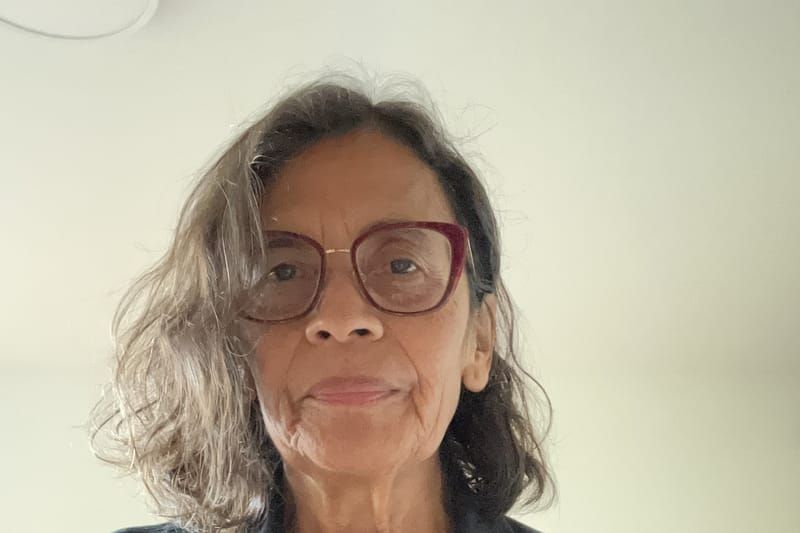

Pilar Riaño Alcalá
Pilar Riaño-Alcalá es profesora del Instituto de Justicia Social de la Universidad de Columbia Británica (Canadá) y codirectora de la Red Internacional de Memoria Transformativa. Es antropóloga y académica interdisciplinaria. Su investigación examina las experiencias humanas y no humanas de la violencia; los paisajes, las huellas y las prácticas cotidianas de la memoria y la reparación social; y las ecologías de la ausencia y la presencia.
Es autora de Re-membering the Fragmented. Guerra, Memoria y Violencia en Colombia; Avanzar a tientas: Memorias, violencias y producción de conocimiento; y Jóvenes, memoria y violencia en Medellín. Una antropología del recuerdo y el olvido, entre otros. Ha llevado a cabo una amplia labor de investigación colaborativa con diversas organizaciones sociales e iniciativas de memoria. Fue investigadora del Grupo de Memoria Histórica (2008-2013) y asesora del Museo de Memoria Histórica de Colombia (2015-2018).